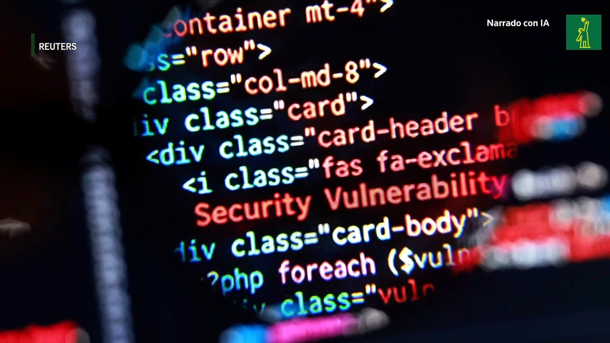

Alerta por fallos críticos en PHP
¿Qué es PHP2Shell y por qué estos fallos críticos amenazan a los servidores web?
PHP es un lenguaje de programación gratuito y de código abierto que funciona en segundo
plano preparando el contenido que recibe cada navegador. Su alcance es masivo: está
presente en cerca del 70% de las páginas web con lenguaje identificable y también es
la base de WordPress, el sistema que impulsa alrededor del 40% de los sitios de Internet,
desde blogs y tiendas hasta medios y portales gubernamentales.
El problema radica en dos fallos de seguridad detectados en el núcleo de PHP,
identificados como CVE-2026-109618 y CVE-2026-109619. Ambos han alcanzado una
puntuación de 9,2 sobre 10 en la escala CVSS v4.0, lo que confirma la extrema
gravedad de estas vulnerabilidades.
Esta amenaza, denominada PHP2Shell, permite aprovechar dichos fallos para ejecutar
comandos y código de forma remota en un servidor afectado. Los atacantes pueden tomar
el control, acceder a datos o alterar la página sin necesidad de disponer de una
cuenta ni introducir una contraseña. Debido al uso tan extendido de PHP, una misma
vulnerabilidad sin corregir pone en riesgo a numerosos servidores de forma simultánea.

¿Qué se sabe de los riesgos para los servidores y las páginas web en España?
En España, el Instituto Nacional de Ciberseguridad (Incibe) ha emitido una alerta de
importancia crítica por las dos vulnerabilidades detectadas en PHP. El organismo ha
advertido de que estos fallos permiten a atacantes remotos ejecutar código y tomar
el control total de un servidor web sin necesidad de identificarse ni contar con permisos.
El aviso afecta a las instalaciones que utilicen versiones vulnerables de PHP para
procesar peticiones web. Al igual que en otros casos, el riesgo es especialmente elevado
en servidores que funcionan con Apache mod_php, aunque también existen vías de ataque en
otros sistemas.
Incibe ha señalado que ya se han registrado ataques contra servidores PHP antes de que
se publicaran las actualizaciones de seguridad. Ante esta situación, la recomendación
principal es comprobar qué versión de PHP utiliza cada sistema y aplicar de inmediato
la actualización correspondiente. Si no resulta posible actualizar un servidor expuesto
a Internet, Incibe aconseja aislarlo de las redes públicas hasta que pueda instalarse
la solución definitiva.